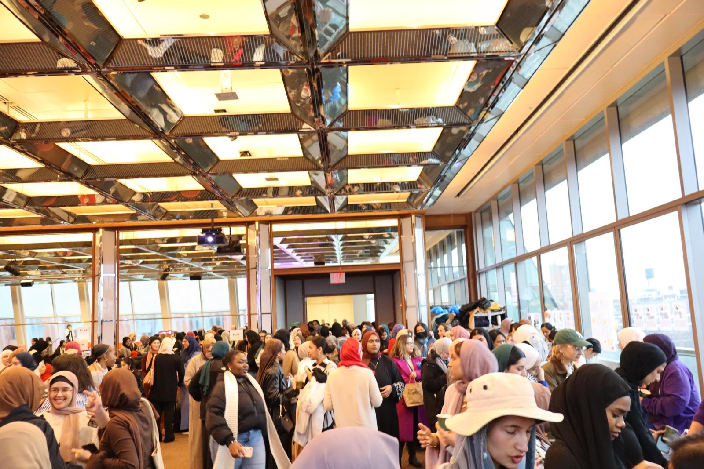

1 / 3

Malikah summit event
2 / 3

Malikah event
3 / 3

Malikah event
The Muslim Women's Leadership Development Project is an initiative at the Brooklyn College Women’s Center that seeks to provide representation for Muslim Women in different career fields, develop a mentorship network, & foster and maintain a community for Muslim students. The goal of our project is to develop meaningful events for Muslim women on the Brooklyn College Campus every semester and address their concerns from Islamaphobia to religious accommodations.